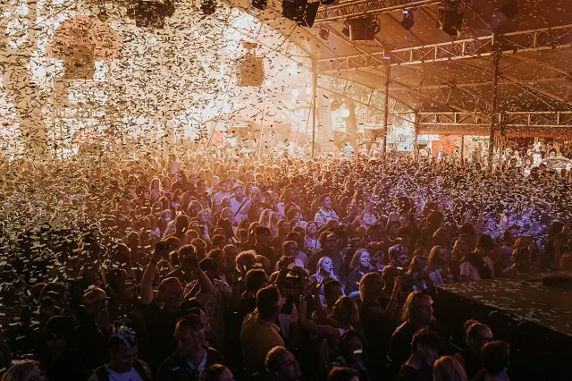
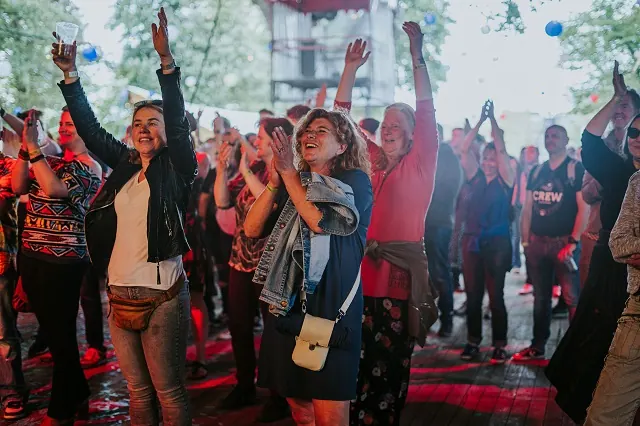

Nieuws ·
Iconic Festival maakt line-up editie 2023 bekend

Dit bericht uit ons archief verscheen op 21 maart 2023 op NieuwsNijmegen.nl. Data, tijden en prijzen kunnen inmiddels anders zijn.
De line-up van Iconic Festival 2023 is bekend. Na twee geslaagde edities is tributefestival Iconic terug in het Valkhofpark op zaterdag 13 mei. Met dit jaar een nog breder scala aan genres, wordt het festivalseizoen in Nijmegen op iconische wijze geopend met tributes van onder andere Queen, ABBA en Coldplay. Tickets zijn nu verkrijgbaar via www.iconicfestival.nl.

Queen
Na de eerste editie in 2019 afgetrapt te hebben met een Queen coverband als headliner, was het voor de organisatie duidelijk dat dit nogmaals moest gebeuren. Ook bezoekers vroegen herhaaldelijk om het terughalen van deze tijdloze grootheden. “Onze derde editie keren ze terug op het podium, vertolkt door de nieuwste en meest sensationele Queen tributeband uit eigen stad”, vertelt Tinus Weijkamp, mede-oprichter: “Queen Must Go On!”. Na het winnen van Battle of the Bands in 2022 en meerdere optredens in het Ziggo Dome zullen zij op 13 mei een onvergetelijke show neerzetten.
Café De Plak en platenbeurs
Daarnaast zullen dit jaar op het festival ook een terras van café De Plak en een platenbeurs verschijnen. Café De Plak is bekend in Nijmegen wegens hun fameuze kaasgehakt en zullen hiermee het food-aanbod op Iconic vergroten. En voor de ultieme muziekliefhebbers is het dit jaar ook mogelijk om rond te neuzen tussen vinyl op de platenbeurs van Ray Elpee.
LINE-UP ICONIC FESTIVAL 2023
“Maar dat is nog niet alles”, aldus Willem van den Berg, mede-oprichter. “Na het succes van Michael Jackson van afgelopen jaar, overstijgen we dit jaar verdere genres. We breiden onze line-up uit met ABBA (ABBA Gold Europe), Coldplay (The Scientists) en Doe Maar (Rondje Doe Maar)!” De tweede zaterdag van mei belooft een muzikaal spektakel te worden, waar ook The Glamrocks, Blaze of Glory en Jonny Smokes niet aan ontbreken.
TICKETS
Ticketsvoor Iconic Festival zijn per direct verkrijgbaar via www.iconicfestival.nl.
Early Bird €15 | Regular €17,50 | Ticketprijzen zijn exclusief service- en boekingskosten.
Omdat Iconic Festival dit jaar voor de derde keer plaatsvindt, is er een speciale actie in het leven geroepen. “Het leven vier je samen”, vindt Tinus. “En wat is er nou leuker dan samen met vrienden en familie te proosten en mee te zingen met ‘s werelds beste bands? Daarom hebben we in trappen van 3 speciale groepstickets in het leven geroepen.” Tijdelijk verkrijgbaar: 3 tickets voor €45, 6 tickets voor €85 en 9 tickets voor €100. | Extra: Onder alle 9-groepstickets wordt een 20L tap bier verloot.
OVER ICONIC
Wat ooit begon als de viering van een vriendschap groeide uit tot een festival dat het Valkhofpark omtovert tot een waar muziekfestijn. De allerbeste tribute bands van Europa vertolken hier iconische muziek van toen en nu. Na twee zeer succesvolle edities keert Iconic terug voor een spectaculair derde jaar. Op 13 mei kunnen bezoekers feesten met een drankje in de hand terwijl ze losgaan op nummers van hun muzikale helden, nog nooit zo dichtbij.